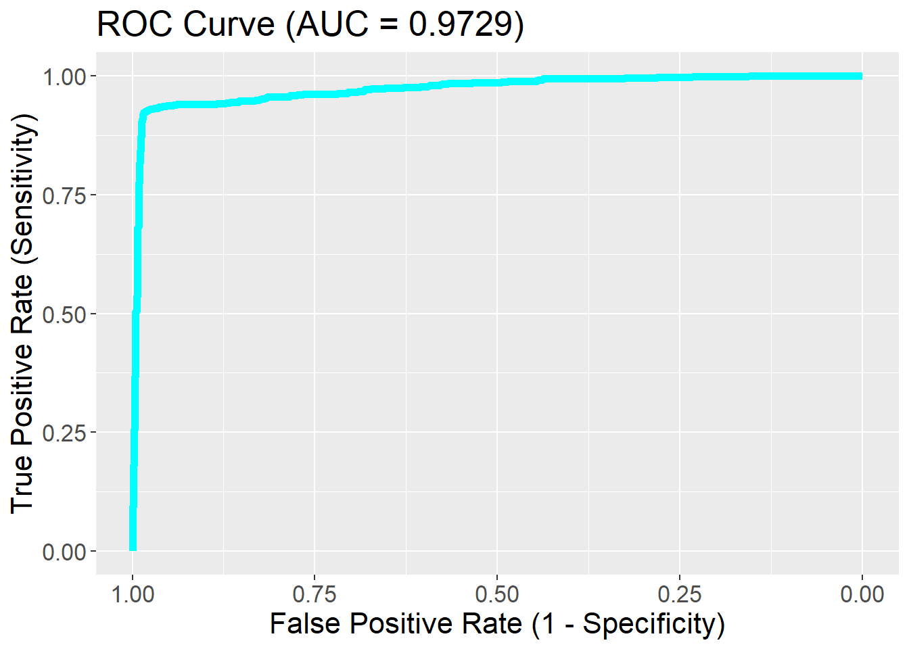

library(dplyr)
library(knitr)
library(skimr)
library(tidyr)
library(Hmisc)
library(ggplot2)
library(GGally)
library(grid)
library(gridExtra)
library(forcats) # for categorical variables
library(janitor) # for tables
library(gt)
library(gtable)
library(tidyverse) # data mgmt and visual
library(gtsummary)
library(broom)
library(kableExtra)
library(haven)
library(lmtest)
library(mfp)
library(ResourceSelection)
library(epiDisplay)This is nearly the same project as the “Logistic Regression Project Winter 2022” except my group and I had a better grasp of what to do.
Disclosure
It is against the academic policy to share the projects and content from our courses. Therefore, I have redacted a lot, and have shown the highlights of what was done.
This project was done in the Spring 2023 term with 2 other peers. This project is essentially the same but with more of a focus on categorical data analysis compared to ‘Logistic Regression Project 22’. This was the first project I had really felt like I had a full understanding of; there are definitely some parts that I wish I could have done more precisely but I am far more comfortable with the outcome of this model than the other.
As with the other logistic regression project, the data used is from the SWAN database.
Research Proposal
The goal of this project was to assess stress and cardiovascular health on middle-aged women in the U.S. The outcome variable is high blood pressure, the primary predictor is self-assessed sleep quality along with the covariates; age, race, smoking status, education, marital status, BMI, income, taking blood pressure medication, self-assessed quality of life and average daily caffeine intake.
Libraries Used
Loading Datasets and Merging
# screening dataset
load("C:/Users/mckjo/OneDrive/Desktop/GitBlog/posts/Logistic Regression Project 23/SCREENING.rda")
# baseline dataset
load("C:/Users/mckjo/OneDrive/Desktop/GitBlog/posts/Logistic Regression Project 23/baseline.rda")
# merge screener and baseline
Merged <- merge(da04368.0001,da28762.0001,
by="SWANID")
dim(Merged) [1] 3302 851# visit 10 dataset
load("C:/Users/mckjo/OneDrive/Desktop/GitBlog/posts/Logistic Regression Project 23/VISIT10-Data.rda")
# merge with other datasets
merged_swan <- merge(Merged,da32961.0001,
by="SWANID")Cleaning Final Dataset df_swan
Removing Observations with Missing Points
Set reference levels
What is blocked out: I removed the coding process on how we recoded our reference levels for our covariates, but I decided to include a brief bullet point list to show what those reference levels are and why.
* High Blood Pressure: No, given the majority of this sample does not have high blood pressure and we’re seeking a change in what is associated with high blood pressure.
Sleep Quality:
Very goodandfairly goodcategories collapsed into one reference category, since we’re assessing if poor sleep is associated with high blood pressure.Race:
Caucasian/White Non-Hispanicdue to white privilege, and systemic and institutional racism in the U.S.Smoking Status:
No, given the majority of the sample are non-smokers.Education:
College GraduateandPost-Graduategiven previous knowledge that at a generalized population-level, those with higher education often have better health outcomes, typically due to having more health literacy and higher income.
Marital Status:
Currently Married, since the majority of the population is married.Income:
$100,000 or morewhich is the highest income category, given the opportunity for better health care quality and access.Taking Blood Pressure Medication:
Yes, given that people taking medication for high blood pressure will likely have lower blood pressure than those who are not taking any.Quality of Life: This was a tricky category and we ended up using the median value which was around a score of 8 out of 10. There should’ve been more research conducted to decide what our cut-off point should’ve been.
Summary new dataset
Table 1: Descriptive Statistics
| Table 1 | |||
| SWAN Participant Characteristics Stratified by High Blood Pressure | |||
| Characteristic | Overall, N = 1,8211 | (1) No, N = 1,2021 | (2) Yes, N = 6191 |
|---|---|---|---|
| Sleep Quality | |||
| (1) Very good | 438 (24%) | 319 (27%) | 119 (19%) |
| (2) Fairly good | 985 (54%) | 651 (54%) | 334 (54%) |
| (3) Fairly bad | 329 (18%) | 195 (16%) | 134 (22%) |
| (4) Very bad | 69 (3.8%) | 37 (3.1%) | 32 (5.2%) |
| Age (Years) | 56.00 (54.00, 58.00) | 56.00 (54.00, 58.00) | 56.00 (54.00, 58.00) |
| Race/Ethnicity | |||
| (0) Caucasian/White Non-Hispanic | 950 (52%) | 706 (59%) | 244 (39%) |
| (1) Black/African American | 476 (26%) | 193 (16%) | 283 (46%) |
| (2) Chinese/Chinese American | 191 (10%) | 148 (12%) | 43 (6.9%) |
| (3) Japanese/Japanese American | 204 (11%) | 155 (13%) | 49 (7.9%) |
| (5) Hispanic | 0 (0%) | 0 (0%) | 0 (0%) |
| Smoking Status | |||
| (1) No | 1,613 (89%) | 1,080 (90%) | 533 (86%) |
| (2) Yes | 208 (11%) | 122 (10%) | 86 (14%) |
| Educational Attainment | |||
| (1) Less than high school | 63 (3.5%) | 32 (2.7%) | 31 (5.0%) |
| (2) High school graduate | 277 (15%) | 153 (13%) | 124 (20%) |
| (3) Some college/technical school | 566 (31%) | 340 (28%) | 226 (37%) |
| (4) College graduate | 426 (23%) | 321 (27%) | 105 (17%) |
| (5) Post graduate education | 489 (27%) | 356 (30%) | 133 (21%) |
| Marital Status | |||
| (1) Single/never married | 207 (11%) | 125 (10%) | 82 (13%) |
| (2) Currently married/living as married | 1,177 (65%) | 825 (69%) | 352 (57%) |
| (3) Separated | 57 (3.1%) | 34 (2.8%) | 23 (3.7%) |
| (4) Widowed | 86 (4.7%) | 47 (3.9%) | 39 (6.3%) |
| (5) Divorced | 294 (16%) | 171 (14%) | 123 (20%) |
| Body Mass Index (BMI) | 25 (22, 30) | 24 (21, 27) | 28 (24, 34) |
| Annual Income | |||
| (1) Less Than $19,999 | 159 (8.7%) | 74 (6.2%) | 85 (14%) |
| (2) $20,000 to $49,999 | 467 (26%) | 307 (26%) | 160 (26%) |
| (3) $50,000 to $99,999 | 404 (22%) | 258 (21%) | 146 (24%) |
| (4) $100,000 or More | 791 (43%) | 563 (47%) | 228 (37%) |
| Taking Blood Pressure Medication | |||
| (1) No | 1,233 (68%) | 1,184 (99%) | 49 (7.9%) |
| (2) Yes | 588 (32%) | 18 (1.5%) | 570 (92%) |
| Quality of Life | 8.00 (7.00, 9.00) | 8.00 (7.00, 9.00) | 8.00 (7.00, 9.00) |
| Caffeine Intake (mg) | 179 (65, 317) | 191 (68, 321) | 159 (61, 310) |
| 1 Median (IQR); Frequency (%) | |||
Exploratory Data Analysis
Frequency Distributions
ggpairs comparison
Contigency Tables
Note: This code below is gifted from my professor at the time. I became more familiar with lapply() throughout her course and the use of contingency tables came as a life saver, so with that note, enjoy.
#Contingency Tables np > 5, all meet this standard, except for Hispanic, which will be excluded in further analyses due to issues within the SWAN dataset.
df_swan_cat <- df_swan_minusID %>% dplyr::select_if(., ~class(.) == "factor")
lapply(df_swan_cat, function(x) table(df_swan_cat$HBP, x))$HBP
x
(1) No (2) Yes
(1) No 1202 0
(2) Yes 0 619
$Sleep
x
(1) Very good (2) Fairly good (3) Fairly bad (4) Very bad
(1) No 319 651 195 37
(2) Yes 119 334 134 32
$Race
x
(0) Caucasian/White Non-Hispanic (1) Black/African American
(1) No 706 193
(2) Yes 244 283
x
(2) Chinese/Chinese American (3) Japanese/Japanese American
(1) No 148 155
(2) Yes 43 49
x
(5) Hispanic
(1) No 0
(2) Yes 0
$Smoking
x
(1) No (2) Yes
(1) No 1080 122
(2) Yes 533 86
$Education
x
(1) Less than high school (2) High school graduate
(1) No 32 153
(2) Yes 31 124
x
(3) Some college/technical school (4) College graduate
(1) No 340 321
(2) Yes 226 105
x
(5) Post graduate education
(1) No 356
(2) Yes 133
$Marital
x
(1) Single/never married (2) Currently married/living as married
(1) No 125 825
(2) Yes 82 352
x
(3) Separated (4) Widowed (5) Divorced
(1) No 34 47 171
(2) Yes 23 39 123
$Income
x
(1) Less Than $19,999 (2) $20,000 to $49,999 (3) $50,000 to $99,999
(1) No 74 307 258
(2) Yes 85 160 146
x
(4) $100,000 or More
(1) No 563
(2) Yes 228
$BPMed
x
(1) No (2) Yes
(1) No 1184 18
(2) Yes 49 570There are sufficient cases in all cells.
Model Building
Step 1 Univariable Analysis
Note: I chose to show this code below since it was life changing for me. This code was also at the sole hands of my professor and I take no credit for this except for including the relevant covariates.
#summarize and pull coefficients for univariate analysis for factored variables
slr_df_swan = df_swan %>% dplyr::select(-Age, -BMI, -Caffeine, -Sleep, -HBP, -Race, -Education, -Marital, -QualLife, -Smoking, -HBP01, -SWANID, - Income, -BPMed)
lapply(slr_df_swan, function(x)summary(glm(df_swan$HBP01 ~ x, family = "binomial"))$coefficients)$Sleep01
Estimate Std. Error z value Pr(>|z|)
(Intercept) -0.7614039 0.05690722 -13.379743 7.942151e-41
x1 0.3862442 0.12581464 3.069946 2.140972e-03
x2 0.6162219 0.24802310 2.484534 1.297210e-02
$Smoking01
Estimate Std. Error z value Pr(>|z|)
(Intercept) -0.7061949 0.05293484 -13.340833 1.339535e-40
x1 0.3565211 0.15042183 2.370142 1.778124e-02
$Education01
Estimate Std. Error z value Pr(>|z|)
(Intercept) -1.0454006 0.07535765 -13.872521 9.295206e-44
x1 1.0136519 0.26303392 3.853693 1.163496e-04
x2 0.8352442 0.14240520 5.865265 4.484153e-09
x3 0.6369900 0.11421353 5.577185 2.444421e-08
$Marital01
Estimate Std. Error z value Pr(>|z|)
(Intercept) -0.8517522 0.06366338 -13.378997 8.022254e-41
x1 0.4301577 0.15571817 2.762412 5.737604e-03
x2 0.4608859 0.27738611 1.661532 9.660664e-02
x3 0.6651663 0.22576680 2.946254 3.216485e-03
x4 0.5222730 0.13427979 3.889439 1.004763e-04
$Income01
Estimate Std. Error z value Pr(>|z|)
(Intercept) -0.9039340 0.0784994 -11.515170 1.106407e-30
x1 1.0425202 0.1773143 5.879503 4.115007e-09
x2 0.2522601 0.1251778 2.015214 4.388223e-02
x3 0.3345810 0.1299517 2.574657 1.003395e-02
$BPMed01
Estimate Std. Error z value Pr(>|z|)
(Intercept) 3.455265 0.2393946 14.43335 3.192144e-47
x1 -6.640098 0.2802901 -23.69009 4.561404e-124
$QualLife01
Estimate Std. Error z value Pr(>|z|)
(Intercept) -0.5260931 0.07822327 -6.725531 1.749527e-11
x0 -0.1967592 0.11654625 -1.688250 9.136318e-02
x2 -0.2623643 0.12332795 -2.127371 3.338930e-02All of our variables move on to the creation of a preliminary model.
Step 2 Preliminary Variable Selection
Initial Model Comparisons
Based on the p values, our initial model would include Sleep01 (clinically significant + meets 0.25 criteria), Race (clinically significant and meets 0.05 criteria), Marital01 (meets 0.05 criteria), BMI (meets 0.05 criteria), BPMed01, (meets 0.05 criteria) and Income01 (meets 0.25 criteria) because the model with all variables is less precise at predicting hypertension in this given sample.
HO: the beta coefficients are equal to zero
HA: one or more beta coefficients are unequal to zero
For our next step, Sleep01 (clinically significant), Race (p < 0.05), Marital01 (p <0.05), BMI (p < 0.05), and BPMed01 (p < 0.05) will be retained in the next iteration of the model. The model with income will not move forward.
Fail to reject the null hypothesis. With a p-value greater than 0.05, we choose the reduced model.
At this point, our model is \[logit((\pi(HBP01| \text{Sleep01}, \text{Race}, \text{Marital01} + \text{BPMed01} + BMI)) = \\ \\beta_0 + \beta_1 \text{Fairly Bad Sleep} + \beta_2 \text{Very Bad Sleep} + \beta_3 \text{Black/African-American} \\ + \beta_4 \text{Chinese/Chinese-American} + \beta_5 \text{Japanese/Japanese-American} + \beta_6 \text{Single/never married} + \beta_7 \text{Separated} \\ + \beta_8 \text{Widowed} + \beta_9 \text{Divorced} + \beta_{10} \text{BPMed01} + \beta_{11} \text{BMI}\]
Step 3 Assessing Change in Coefficients in Reduced Model
Assessing Without ‘Income01’
Checking for change greater than 20% in coefficients.
There is evidence that some confounding may be occurring due to the high percent change among two variables, therefore income should remain in the model because it is potentially a confounder.
Step 4 Adding Excluded Variables to the Reduced Model
What is blocked out: For this step we ran a likelihood ratio test with the initial model as the reduced model and the initial model with the included covariate that we were assessing as the full model.
Assessing Age
Assessing Smoking01
Assessing Education01
Assessing Caffeine
Assessing QualLife01
None of the initially excluded variables should be added back into the model.
Collapse Variable Kevels
Assessing binary sleep quality with our preliminary main effects model
Assessing binary race with our preliminary main effects model
Assessing binary marital status with our preliminary main effects model
Preliminary Main Effects Model
Step 5 Assessing Scale for Continuous Variables
Smoothed Scatter Plots
Fractional Polynomials
This was running prior but for some reason isn’t as of this point in time of me trying to render this page. I’m keeping it in just for the sake of showing we assessed fractional polynomials.
#fracpoly_b = mfp(HBP01~ fp(BMI, df = 4) + Age + BPMed01 + Sleep01 + Income01 + Marital01,
# data=df_swan, family = "binomial", verbose = T)
#fracpoly_b$fptable
#linear model works for BMIMain effects model
Model
main.effects.model <- initial.modelAfter assessing the linearity of our continuous variables, the best performing model continues to be ‘initial.model’, renamed as ‘main.effects.model’
Step 6 Interactions
Note: I have no idea how to fix this issue below. I have include and echo = FALSE but given the structure of the code (hint: it’s lapply and function but pulling stuff from the environment so it is kind of creating it’s own separate code chunk with its own set of laws I suppose).
[[1]]
Call:
glm(formula = reformulate(c(vars, cb), "HBP01", env = .env),
family = binomial, data = df_swan)
Coefficients:
Estimate Std. Error z value
(Intercept) 1.56042 0.62781 2.485
Sleep011 -0.10963 0.48197 -0.227
Sleep012 -0.02100 1.00728 -0.021
Race(1) Black/African American 0.60335 0.37758 1.598
Race(2) Chinese/Chinese American -0.20639 0.53947 -0.383
Race(3) Japanese/Japanese American 0.96150 0.42391 2.268
BPMed011 -6.78456 0.31822 -21.320
BMI 0.06239 0.02013 3.100
Income011 -0.13915 0.50819 -0.274
Income012 -0.12330 0.33666 -0.366
Income013 0.51445 0.32541 1.581
Marital011 -0.96083 0.46253 -2.077
Marital012 -0.29235 0.74636 -0.392
Marital013 -0.66475 0.61208 -1.086
Marital014 -0.18417 0.37680 -0.489
Sleep011:Race(1) Black/African American 1.37644 0.74615 1.845
Sleep012:Race(1) Black/African American 1.82494 1.21404 1.503
Sleep011:Race(2) Chinese/Chinese American 1.25486 1.16657 1.076
Sleep012:Race(2) Chinese/Chinese American -11.85917 591.31736 -0.020
Sleep011:Race(3) Japanese/Japanese American 0.48137 1.06091 0.454
Sleep012:Race(3) Japanese/Japanese American 12.44606 1455.39799 0.009
Pr(>|z|)
(Intercept) 0.01294 *
Sleep011 0.82007
Sleep012 0.98337
Race(1) Black/African American 0.11006
Race(2) Chinese/Chinese American 0.70204
Race(3) Japanese/Japanese American 0.02332 *
BPMed011 < 2e-16 ***
BMI 0.00194 **
Income011 0.78422
Income012 0.71418
Income013 0.11390
Marital011 0.03777 *
Marital012 0.69528
Marital013 0.27746
Marital014 0.62501
Sleep011:Race(1) Black/African American 0.06508 .
Sleep012:Race(1) Black/African American 0.13279
Sleep011:Race(2) Chinese/Chinese American 0.28207
Sleep012:Race(2) Chinese/Chinese American 0.98400
Sleep011:Race(3) Japanese/Japanese American 0.65002
Sleep012:Race(3) Japanese/Japanese American 0.99318
---
Signif. codes: 0 '***' 0.001 '**' 0.01 '*' 0.05 '.' 0.1 ' ' 1
(Dispersion parameter for binomial family taken to be 1)
Null deviance: 2334.5 on 1820 degrees of freedom
Residual deviance: 525.8 on 1800 degrees of freedom
AIC: 567.8
Number of Fisher Scoring iterations: 14
[[2]]
Call:
glm(formula = reformulate(c(vars, cb), "HBP01", env = .env),
family = binomial, data = df_swan)
Coefficients:
Estimate Std. Error z value Pr(>|z|)
(Intercept) 1.283439 0.619927 2.070 0.03842 *
Sleep011 0.786703 0.765332 1.028 0.30399
Sleep012 -0.037535 1.085317 -0.035 0.97241
Race(1) Black/African American 1.011852 0.320778 3.154 0.00161 **
Race(2) Chinese/Chinese American 0.007866 0.473709 0.017 0.98675
Race(3) Japanese/Japanese American 1.107460 0.394037 2.811 0.00495 **
BPMed011 -6.692071 0.344239 -19.440 < 2e-16 ***
BMI 0.064413 0.019874 3.241 0.00119 **
Income011 -0.072334 0.514299 -0.141 0.88815
Income012 -0.099978 0.332353 -0.301 0.76355
Income013 0.465729 0.323356 1.440 0.14978
Marital011 -0.956631 0.468640 -2.041 0.04122 *
Marital012 -0.252366 0.757010 -0.333 0.73885
Marital013 -0.693576 0.610387 -1.136 0.25584
Marital014 -0.179125 0.373172 -0.480 0.63122
Sleep011:BPMed011 -0.395966 0.855614 -0.463 0.64352
Sleep012:BPMed011 1.180241 1.213732 0.972 0.33085
---
Signif. codes: 0 '***' 0.001 '**' 0.01 '*' 0.05 '.' 0.1 ' ' 1
(Dispersion parameter for binomial family taken to be 1)
Null deviance: 2334.47 on 1820 degrees of freedom
Residual deviance: 531.03 on 1804 degrees of freedom
AIC: 565.03
Number of Fisher Scoring iterations: 6
[[3]]
Call:
glm(formula = reformulate(c(vars, cb), "HBP01", env = .env),
family = binomial, data = df_swan)
Coefficients:
Estimate Std. Error z value Pr(>|z|)
(Intercept) 1.4309101 0.7418752 1.929 0.05376 .
Sleep011 0.0344342 1.1824329 0.029 0.97677
Sleep012 0.9843446 2.0459917 0.481 0.63044
Race(1) Black/African American 1.0313280 0.3205687 3.217 0.00129 **
Race(2) Chinese/Chinese American 0.0114880 0.4730464 0.024 0.98063
Race(3) Japanese/Japanese American 1.1035742 0.3936501 2.803 0.00506 **
BPMed011 -6.7155294 0.3129457 -21.459 < 2e-16 ***
BMI 0.0595600 0.0249609 2.386 0.01703 *
Income011 -0.1029611 0.5192188 -0.198 0.84281
Income012 -0.1147497 0.3327172 -0.345 0.73018
Income013 0.4743448 0.3223023 1.472 0.14109
Marital011 -0.9910955 0.4704926 -2.107 0.03516 *
Marital012 -0.2706109 0.7497872 -0.361 0.71816
Marital013 -0.6618042 0.6123452 -1.081 0.27980
Marital014 -0.1819259 0.3727933 -0.488 0.62554
Sleep011:BMI 0.0154446 0.0400876 0.385 0.70004
Sleep012:BMI 0.0003948 0.0660636 0.006 0.99523
---
Signif. codes: 0 '***' 0.001 '**' 0.01 '*' 0.05 '.' 0.1 ' ' 1
(Dispersion parameter for binomial family taken to be 1)
Null deviance: 2334.47 on 1820 degrees of freedom
Residual deviance: 531.97 on 1804 degrees of freedom
AIC: 565.97
Number of Fisher Scoring iterations: 6
[[4]]
Call:
glm(formula = reformulate(c(vars, cb), "HBP01", env = .env),
family = binomial, data = df_swan)
Coefficients:
Estimate Std. Error z value Pr(>|z|)
(Intercept) 1.14122 0.62595 1.823 0.06828 .
Sleep011 0.87988 0.49410 1.781 0.07495 .
Sleep012 1.54734 0.82887 1.867 0.06193 .
Race(1) Black/African American 1.02999 0.32125 3.206 0.00135 **
Race(2) Chinese/Chinese American 0.01377 0.47207 0.029 0.97672
Race(3) Japanese/Japanese American 1.13423 0.39309 2.885 0.00391 **
BPMed011 -6.72042 0.31329 -21.451 < 2e-16 ***
BMI 0.06571 0.02018 3.256 0.00113 **
Income011 0.14579 0.63536 0.229 0.81852
Income012 0.17013 0.37766 0.450 0.65235
Income013 0.56681 0.37665 1.505 0.13236
Marital011 -0.98891 0.47239 -2.093 0.03631 *
Marital012 -0.27791 0.74356 -0.374 0.70858
Marital013 -0.64259 0.62098 -1.035 0.30076
Marital014 -0.13161 0.37549 -0.350 0.72597
Sleep011:Income011 -0.42898 1.10299 -0.389 0.69733
Sleep012:Income011 -1.66471 1.67488 -0.994 0.32026
Sleep011:Income012 -1.07495 0.84152 -1.277 0.20147
Sleep012:Income012 -1.71441 1.69364 -1.012 0.31141
Sleep011:Income013 -0.44914 0.82911 -0.542 0.58801
Sleep012:Income013 -0.22559 1.18940 -0.190 0.84957
---
Signif. codes: 0 '***' 0.001 '**' 0.01 '*' 0.05 '.' 0.1 ' ' 1
(Dispersion parameter for binomial family taken to be 1)
Null deviance: 2334.47 on 1820 degrees of freedom
Residual deviance: 528.84 on 1800 degrees of freedom
AIC: 570.84
Number of Fisher Scoring iterations: 6
[[5]]
Call:
glm(formula = reformulate(c(vars, cb), "HBP01", env = .env),
family = binomial, data = df_swan)
Coefficients: (1 not defined because of singularities)
Estimate Std. Error z value Pr(>|z|)
(Intercept) 1.35617 0.62068 2.185 0.02889 *
Sleep011 0.40093 0.41468 0.967 0.33363
Sleep012 1.36569 0.60866 2.244 0.02485 *
Race(1) Black/African American 1.03074 0.32136 3.207 0.00134 **
Race(2) Chinese/Chinese American 0.01987 0.47081 0.042 0.96634
Race(3) Japanese/Japanese American 1.10420 0.39440 2.800 0.00511 **
BPMed011 -6.72736 0.31459 -21.384 < 2e-16 ***
BMI 0.06168 0.02010 3.069 0.00215 **
Income011 -0.01202 0.53155 -0.023 0.98195
Income012 -0.06614 0.33268 -0.199 0.84242
Income013 0.47009 0.32250 1.458 0.14494
Marital011 -1.17576 0.54071 -2.174 0.02967 *
Marital012 -0.66047 0.93076 -0.710 0.47795
Marital013 -0.52086 0.69144 -0.753 0.45127
Marital014 0.01153 0.42207 0.027 0.97821
Sleep011:Marital011 0.89502 1.04748 0.854 0.39286
Sleep012:Marital011 -0.35902 1.68035 -0.214 0.83081
Sleep011:Marital012 1.13744 1.45092 0.784 0.43307
Sleep012:Marital012 NA NA NA NA
Sleep011:Marital013 -0.26598 1.71142 -0.155 0.87649
Sleep012:Marital013 -13.54186 709.56262 -0.019 0.98477
Sleep011:Marital014 -0.43770 0.91037 -0.481 0.63067
Sleep012:Marital014 -2.22310 1.96595 -1.131 0.25814
---
Signif. codes: 0 '***' 0.001 '**' 0.01 '*' 0.05 '.' 0.1 ' ' 1
(Dispersion parameter for binomial family taken to be 1)
Null deviance: 2334.47 on 1820 degrees of freedom
Residual deviance: 528.29 on 1799 degrees of freedom
AIC: 572.29
Number of Fisher Scoring iterations: 14
[[6]]
Call:
glm(formula = reformulate(c(vars, cb), "HBP01", env = .env),
family = binomial, data = df_swan)
Coefficients:
Estimate Std. Error z value
(Intercept) 1.25868 0.62657 2.009
Sleep011 0.45799 0.32679 1.402
Sleep012 0.95832 0.53998 1.775
Race(1) Black/African American 0.85423 0.53112 1.608
Race(2) Chinese/Chinese American 1.04538 1.06584 0.981
Race(3) Japanese/Japanese American 14.75406 616.10033 0.024
BPMed011 -6.57544 0.39848 -16.501
BMI 0.06246 0.01955 3.195
Income011 -0.05439 0.50587 -0.108
Income012 -0.11552 0.33194 -0.348
Income013 0.48715 0.32410 1.503
Marital011 -0.98460 0.46451 -2.120
Marital012 -0.30817 0.74049 -0.416
Marital013 -0.67766 0.60189 -1.126
Marital014 -0.17412 0.36773 -0.474
Race(1) Black/African American:BPMed011 0.22512 0.62517 0.360
Race(2) Chinese/Chinese American:BPMed011 -1.63565 1.30190 -1.256
Race(3) Japanese/Japanese American:BPMed011 -13.78653 616.10047 -0.022
Pr(>|z|)
(Intercept) 0.0446 *
Sleep011 0.1611
Sleep012 0.0759 .
Race(1) Black/African American 0.1078
Race(2) Chinese/Chinese American 0.3267
Race(3) Japanese/Japanese American 0.9809
BPMed011 <2e-16 ***
BMI 0.0014 **
Income011 0.9144
Income012 0.7278
Income013 0.1328
Marital011 0.0340 *
Marital012 0.6773
Marital013 0.2602
Marital014 0.6359
Race(1) Black/African American:BPMed011 0.7188
Race(2) Chinese/Chinese American:BPMed011 0.2090
Race(3) Japanese/Japanese American:BPMed011 0.9821
---
Signif. codes: 0 '***' 0.001 '**' 0.01 '*' 0.05 '.' 0.1 ' ' 1
(Dispersion parameter for binomial family taken to be 1)
Null deviance: 2334.47 on 1820 degrees of freedom
Residual deviance: 528.04 on 1803 degrees of freedom
AIC: 564.04
Number of Fisher Scoring iterations: 16
[[7]]
Call:
glm(formula = reformulate(c(vars, cb), "HBP01", env = .env),
family = binomial, data = df_swan)
Coefficients:
Estimate Std. Error z value Pr(>|z|)
(Intercept) 1.37585 0.85012 1.618 0.10557
Sleep011 0.44089 0.33045 1.334 0.18214
Sleep012 1.02068 0.54156 1.885 0.05947 .
Race(1) Black/African American 1.66642 1.27444 1.308 0.19102
Race(2) Chinese/Chinese American -6.26118 2.40784 -2.600 0.00931 **
Race(3) Japanese/Japanese American 1.79959 2.38999 0.753 0.45147
BPMed011 -6.77650 0.32005 -21.173 < 2e-16 ***
BMI 0.06259 0.02918 2.145 0.03195 *
Income011 -0.04964 0.52346 -0.095 0.92445
Income012 -0.09452 0.33537 -0.282 0.77807
Income013 0.49735 0.32564 1.527 0.12669
Marital011 -0.96841 0.47975 -2.019 0.04353 *
Marital012 -0.22154 0.73639 -0.301 0.76353
Marital013 -0.68280 0.62815 -1.087 0.27704
Marital014 -0.16290 0.37653 -0.433 0.66528
Race(1) Black/African American:BMI -0.02091 0.04231 -0.494 0.62111
Race(2) Chinese/Chinese American:BMI 0.26223 0.09681 2.709 0.00675 **
Race(3) Japanese/Japanese American:BMI -0.02952 0.10127 -0.292 0.77065
---
Signif. codes: 0 '***' 0.001 '**' 0.01 '*' 0.05 '.' 0.1 ' ' 1
(Dispersion parameter for binomial family taken to be 1)
Null deviance: 2334.47 on 1820 degrees of freedom
Residual deviance: 522.74 on 1803 degrees of freedom
AIC: 558.74
Number of Fisher Scoring iterations: 6
[[8]]
Call:
glm(formula = reformulate(c(vars, cb), "HBP01", env = .env),
family = binomial, data = df_swan)
Coefficients:
Estimate Std. Error z value
(Intercept) 1.30106 0.62418 2.084
Sleep011 0.50344 0.32978 1.527
Sleep012 0.98297 0.54702 1.797
Race(1) Black/African American 1.16812 0.53399 2.188
Race(2) Chinese/Chinese American 0.69325 0.64116 1.081
Race(3) Japanese/Japanese American 0.45906 0.65119 0.705
BPMed011 -6.77442 0.31947 -21.205
BMI 0.06531 0.01992 3.278
Income011 -0.62625 0.83636 -0.749
Income012 0.07351 0.47983 0.153
Income013 0.40344 0.48997 0.823
Marital011 -0.95487 0.46734 -2.043
Marital012 -0.32005 0.75877 -0.422
Marital013 -0.70153 0.60049 -1.168
Marital014 -0.13334 0.37929 -0.352
Race(1) Black/African American:Income011 0.64942 1.06662 0.609
Race(2) Chinese/Chinese American:Income011 0.43473 2.20175 0.197
Race(3) Japanese/Japanese American:Income011 -0.11530 3.25302 -0.035
Race(1) Black/African American:Income012 -0.70536 0.79130 -0.891
Race(2) Chinese/Chinese American:Income012 -1.62690 1.18703 -1.371
Race(3) Japanese/Japanese American:Income012 1.02195 0.94502 1.081
Race(1) Black/African American:Income013 -0.01481 0.78351 -0.019
Race(2) Chinese/Chinese American:Income013 -1.38165 1.17284 -1.178
Race(3) Japanese/Japanese American:Income013 1.19847 0.92406 1.297
Pr(>|z|)
(Intercept) 0.03712 *
Sleep011 0.12687
Sleep012 0.07234 .
Race(1) Black/African American 0.02870 *
Race(2) Chinese/Chinese American 0.27959
Race(3) Japanese/Japanese American 0.48084
BPMed011 < 2e-16 ***
BMI 0.00105 **
Income011 0.45399
Income012 0.87824
Income013 0.41028
Marital011 0.04103 *
Marital012 0.67317
Marital013 0.24271
Marital014 0.72518
Race(1) Black/African American:Income011 0.54261
Race(2) Chinese/Chinese American:Income011 0.84348
Race(3) Japanese/Japanese American:Income011 0.97173
Race(1) Black/African American:Income012 0.37272
Race(2) Chinese/Chinese American:Income012 0.17051
Race(3) Japanese/Japanese American:Income012 0.27952
Race(1) Black/African American:Income013 0.98492
Race(2) Chinese/Chinese American:Income013 0.23878
Race(3) Japanese/Japanese American:Income013 0.19464
---
Signif. codes: 0 '***' 0.001 '**' 0.01 '*' 0.05 '.' 0.1 ' ' 1
(Dispersion parameter for binomial family taken to be 1)
Null deviance: 2334.47 on 1820 degrees of freedom
Residual deviance: 524.33 on 1797 degrees of freedom
AIC: 572.33
Number of Fisher Scoring iterations: 6
[[9]]
Call:
glm(formula = reformulate(c(vars, cb), "HBP01", env = .env),
family = binomial, data = df_swan)
Coefficients:
Estimate Std. Error z value
(Intercept) 1.36437 0.61438 2.221
Sleep011 0.44482 0.33024 1.347
Sleep012 0.99189 0.54449 1.822
Race(1) Black/African American 0.94419 0.42391 2.227
Race(2) Chinese/Chinese American 0.12708 0.53506 0.238
Race(3) Japanese/Japanese American 0.98285 0.44387 2.214
BPMed011 -6.76753 0.32034 -21.126
BMI 0.06444 0.01981 3.253
Income011 -0.13782 0.53275 -0.259
Income012 -0.09609 0.33547 -0.286
Income013 0.49708 0.32392 1.535
Marital011 -0.97043 0.69881 -1.389
Marital012 -0.82210 1.64310 -0.500
Marital013 -1.29979 0.96144 -1.352
Marital014 -0.21428 0.58087 -0.369
Race(1) Black/African American:Marital011 0.22114 0.96109 0.230
Race(2) Chinese/Chinese American:Marital011 -1.44056 1.45729 -0.989
Race(3) Japanese/Japanese American:Marital011 0.07479 1.98187 0.038
Race(1) Black/African American:Marital012 0.77441 1.89299 0.409
Race(2) Chinese/Chinese American:Marital012 0.69836 3.31944 0.210
Race(3) Japanese/Japanese American:Marital012 0.47673 3.83073 0.124
Race(1) Black/African American:Marital013 0.43212 1.30390 0.331
Race(2) Chinese/Chinese American:Marital013 1.29374 2.26170 0.572
Race(3) Japanese/Japanese American:Marital013 2.16745 1.50353 1.442
Race(1) Black/African American:Marital014 0.12267 0.82102 0.149
Race(2) Chinese/Chinese American:Marital014 -0.44326 1.62551 -0.273
Race(3) Japanese/Japanese American:Marital014 0.20135 1.20515 0.167
Pr(>|z|)
(Intercept) 0.02637 *
Sleep011 0.17799
Sleep012 0.06850 .
Race(1) Black/African American 0.02593 *
Race(2) Chinese/Chinese American 0.81226
Race(3) Japanese/Japanese American 0.02681 *
BPMed011 < 2e-16 ***
BMI 0.00114 **
Income011 0.79586
Income012 0.77455
Income013 0.12489
Marital011 0.16493
Marital012 0.61684
Marital013 0.17640
Marital014 0.71220
Race(1) Black/African American:Marital011 0.81802
Race(2) Chinese/Chinese American:Marital011 0.32290
Race(3) Japanese/Japanese American:Marital011 0.96990
Race(1) Black/African American:Marital012 0.68247
Race(2) Chinese/Chinese American:Marital012 0.83337
Race(3) Japanese/Japanese American:Marital012 0.90096
Race(1) Black/African American:Marital013 0.74034
Race(2) Chinese/Chinese American:Marital013 0.56731
Race(3) Japanese/Japanese American:Marital013 0.14942
Race(1) Black/African American:Marital014 0.88123
Race(2) Chinese/Chinese American:Marital014 0.78509
Race(3) Japanese/Japanese American:Marital014 0.86731
---
Signif. codes: 0 '***' 0.001 '**' 0.01 '*' 0.05 '.' 0.1 ' ' 1
(Dispersion parameter for binomial family taken to be 1)
Null deviance: 2334.47 on 1820 degrees of freedom
Residual deviance: 528.74 on 1794 degrees of freedom
AIC: 582.74
Number of Fisher Scoring iterations: 6
[[10]]
Call:
glm(formula = reformulate(c(vars, cb), "HBP01", env = .env),
family = binomial, data = df_swan)
Coefficients:
Estimate Std. Error z value Pr(>|z|)
(Intercept) 2.64505 1.05770 2.501 0.01239 *
Sleep011 0.44389 0.32776 1.354 0.17563
Sleep012 0.95084 0.54138 1.756 0.07903 .
Race(1) Black/African American 0.99884 0.31618 3.159 0.00158 **
Race(2) Chinese/Chinese American -0.01643 0.49578 -0.033 0.97357
Race(3) Japanese/Japanese American 1.15556 0.40064 2.884 0.00392 **
BPMed011 -8.46216 1.19238 -7.097 1.28e-12 ***
BMI 0.01637 0.03503 0.467 0.64020
Income011 -0.04911 0.50423 -0.097 0.92242
Income012 -0.10908 0.33386 -0.327 0.74387
Income013 0.48649 0.32368 1.503 0.13285
Marital011 -0.95338 0.46085 -2.069 0.03857 *
Marital012 -0.26923 0.75379 -0.357 0.72096
Marital013 -0.68278 0.60243 -1.133 0.25705
Marital014 -0.16046 0.37106 -0.432 0.66543
BPMed011:BMI 0.06243 0.03976 1.570 0.11632
---
Signif. codes: 0 '***' 0.001 '**' 0.01 '*' 0.05 '.' 0.1 ' ' 1
(Dispersion parameter for binomial family taken to be 1)
Null deviance: 2334.47 on 1820 degrees of freedom
Residual deviance: 529.84 on 1805 degrees of freedom
AIC: 561.84
Number of Fisher Scoring iterations: 6
[[11]]
Call:
glm(formula = reformulate(c(vars, cb), "HBP01", env = .env),
family = binomial, data = df_swan)
Coefficients:
Estimate Std. Error z value Pr(>|z|)
(Intercept) 1.38591 0.65908 2.103 0.03549 *
Sleep011 0.43284 0.32840 1.318 0.18750
Sleep012 0.91839 0.52841 1.738 0.08221 .
Race(1) Black/African American 1.03819 0.31911 3.253 0.00114 **
Race(2) Chinese/Chinese American 0.03094 0.48296 0.064 0.94892
Race(3) Japanese/Japanese American 1.12533 0.39829 2.825 0.00472 **
BPMed011 -6.79080 0.46714 -14.537 < 2e-16 ***
BMI 0.06348 0.01958 3.242 0.00119 **
Income011 -0.90032 0.63782 -1.412 0.15808
Income012 -0.02766 0.61065 -0.045 0.96387
Income013 1.34348 1.07870 1.245 0.21296
Marital011 -0.99234 0.46327 -2.142 0.03219 *
Marital012 -0.35328 0.72832 -0.485 0.62763
Marital013 -0.71560 0.59516 -1.202 0.22922
Marital014 -0.20351 0.37315 -0.545 0.58549
BPMed011:Income011 1.49964 0.79301 1.891 0.05862 .
BPMed011:Income012 -0.12341 0.73188 -0.169 0.86610
BPMed011:Income013 -0.95115 1.13915 -0.835 0.40373
---
Signif. codes: 0 '***' 0.001 '**' 0.01 '*' 0.05 '.' 0.1 ' ' 1
(Dispersion parameter for binomial family taken to be 1)
Null deviance: 2334.47 on 1820 degrees of freedom
Residual deviance: 526.64 on 1803 degrees of freedom
AIC: 562.64
Number of Fisher Scoring iterations: 7
[[12]]
Call:
glm(formula = reformulate(c(vars, cb), "HBP01", env = .env),
family = binomial, data = df_swan)
Coefficients:
Estimate Std. Error z value Pr(>|z|)
(Intercept) 1.190253 0.630297 1.888 0.05897 .
Sleep011 0.476017 0.326834 1.456 0.14527
Sleep012 0.983765 0.539665 1.823 0.06832 .
Race(1) Black/African American 1.031145 0.322105 3.201 0.00137 **
Race(2) Chinese/Chinese American 0.009365 0.470194 0.020 0.98411
Race(3) Japanese/Japanese American 1.095500 0.392249 2.793 0.00522 **
BPMed011 -6.586487 0.382266 -17.230 < 2e-16 ***
BMI 0.064660 0.019886 3.252 0.00115 **
Income011 -0.065775 0.531515 -0.124 0.90151
Income012 -0.110428 0.332671 -0.332 0.73993
Income013 0.479812 0.321167 1.494 0.13518
Marital011 -0.925456 0.633058 -1.462 0.14377
Marital012 12.703182 496.312880 0.026 0.97958
Marital013 -0.056510 1.075610 -0.053 0.95810
Marital014 -0.182469 0.685690 -0.266 0.79015
BPMed011:Marital011 -0.064857 0.881572 -0.074 0.94135
BPMed011:Marital012 -13.480348 496.313962 -0.027 0.97833
BPMed011:Marital013 -1.180383 1.489617 -0.792 0.42812
BPMed011:Marital014 0.006055 0.788735 0.008 0.99387
---
Signif. codes: 0 '***' 0.001 '**' 0.01 '*' 0.05 '.' 0.1 ' ' 1
(Dispersion parameter for binomial family taken to be 1)
Null deviance: 2334.47 on 1820 degrees of freedom
Residual deviance: 529.94 on 1802 degrees of freedom
AIC: 567.94
Number of Fisher Scoring iterations: 15
[[13]]
Call:
glm(formula = reformulate(c(vars, cb), "HBP01", env = .env),
family = binomial, data = df_swan)
Coefficients:
Estimate Std. Error z value Pr(>|z|)
(Intercept) 0.315583 0.887546 0.356 0.72216
Sleep011 0.502386 0.331118 1.517 0.12921
Sleep012 0.972887 0.549682 1.770 0.07674 .
Race(1) Black/African American 1.024278 0.323054 3.171 0.00152 **
Race(2) Chinese/Chinese American 0.002979 0.464039 0.006 0.99488
Race(3) Japanese/Japanese American 1.125004 0.396413 2.838 0.00454 **
BPMed011 -6.762386 0.317151 -21.322 < 2e-16 ***
BMI 0.102477 0.031199 3.285 0.00102 **
Income011 0.498585 1.818145 0.274 0.78391
Income012 0.983624 1.333666 0.738 0.46080
Income013 3.196710 1.376198 2.323 0.02019 *
Marital011 -0.988340 0.472232 -2.093 0.03636 *
Marital012 -0.270663 0.748400 -0.362 0.71761
Marital013 -0.650182 0.611307 -1.064 0.28751
Marital014 -0.203199 0.374672 -0.542 0.58758
BMI:Income011 -0.024693 0.057232 -0.431 0.66613
BMI:Income012 -0.041067 0.047155 -0.871 0.38381
BMI:Income013 -0.100878 0.049944 -2.020 0.04340 *
---
Signif. codes: 0 '***' 0.001 '**' 0.01 '*' 0.05 '.' 0.1 ' ' 1
(Dispersion parameter for binomial family taken to be 1)
Null deviance: 2334.47 on 1820 degrees of freedom
Residual deviance: 527.84 on 1803 degrees of freedom
AIC: 563.84
Number of Fisher Scoring iterations: 6
[[14]]
Call:
glm(formula = reformulate(c(vars, cb), "HBP01", env = .env),
family = binomial, data = df_swan)
Coefficients:
Estimate Std. Error z value Pr(>|z|)
(Intercept) 1.58211 0.78338 2.020 0.04342 *
Sleep011 0.45483 0.32711 1.390 0.16439
Sleep012 1.03466 0.54228 1.908 0.05639 .
Race(1) Black/African American 1.01710 0.32155 3.163 0.00156 **
Race(2) Chinese/Chinese American -0.01606 0.47346 -0.034 0.97294
Race(3) Japanese/Japanese American 1.07766 0.39358 2.738 0.00618 **
BPMed011 -6.72695 0.31484 -21.366 < 2e-16 ***
BMI 0.05421 0.02678 2.024 0.04294 *
Income011 -0.11705 0.52422 -0.223 0.82332
Income012 -0.09297 0.33308 -0.279 0.78015
Income013 0.48777 0.32365 1.507 0.13179
Marital011 -2.25854 1.50172 -1.504 0.13259
Marital012 0.56140 3.15687 0.178 0.85885
Marital013 0.46822 2.72212 0.172 0.86343
Marital014 -0.71324 1.43534 -0.497 0.61925
BMI:Marital011 0.04221 0.04745 0.890 0.37370
BMI:Marital012 -0.02920 0.11336 -0.258 0.79670
BMI:Marital013 -0.03867 0.09290 -0.416 0.67718
BMI:Marital014 0.01944 0.04941 0.393 0.69405
---
Signif. codes: 0 '***' 0.001 '**' 0.01 '*' 0.05 '.' 0.1 ' ' 1
(Dispersion parameter for binomial family taken to be 1)
Null deviance: 2334.47 on 1820 degrees of freedom
Residual deviance: 530.85 on 1802 degrees of freedom
AIC: 568.85
Number of Fisher Scoring iterations: 6
[[15]]
Call:
glm(formula = reformulate(c(vars, cb), "HBP01", env = .env),
family = binomial, data = df_swan)
Coefficients:
Estimate Std. Error z value Pr(>|z|)
(Intercept) 1.469764 0.631645 2.327 0.01997 *
Sleep011 0.451884 0.331023 1.365 0.17222
Sleep012 1.025742 0.550423 1.864 0.06238 .
Race(1) Black/African American 1.010216 0.321705 3.140 0.00169 **
Race(2) Chinese/Chinese American 0.003417 0.479237 0.007 0.99431
Race(3) Japanese/Japanese American 1.113929 0.394628 2.823 0.00476 **
BPMed011 -6.840611 0.330909 -20.672 < 2e-16 ***
BMI 0.061862 0.020035 3.088 0.00202 **
Income011 0.644566 0.952429 0.677 0.49856
Income012 -0.207287 0.421030 -0.492 0.62248
Income013 0.483421 0.378291 1.278 0.20128
Marital011 -0.835400 0.981333 -0.851 0.39461
Marital012 -0.770281 1.387083 -0.555 0.57867
Marital013 -1.391565 0.958184 -1.452 0.14642
Marital014 0.044020 0.632396 0.070 0.94451
Income011:Marital011 -0.247593 1.534024 -0.161 0.87178
Income012:Marital011 -0.449977 1.231241 -0.365 0.71476
Income013:Marital011 -0.708678 1.404843 -0.504 0.61394
Income011:Marital012 -0.921711 2.285121 -0.403 0.68669
Income012:Marital012 0.776991 2.225427 0.349 0.72698
Income013:Marital012 1.339378 1.776618 0.754 0.45091
Income011:Marital013 -0.106891 1.796217 -0.060 0.95255
Income012:Marital013 0.668799 1.541345 0.434 0.66436
Income013:Marital013 1.856966 1.435691 1.293 0.19586
Income011:Marital014 -1.929189 1.371690 -1.406 0.15960
Income012:Marital014 0.339140 0.891680 0.380 0.70369
Income013:Marital014 -0.552293 1.013895 -0.545 0.58594
---
Signif. codes: 0 '***' 0.001 '**' 0.01 '*' 0.05 '.' 0.1 ' ' 1
(Dispersion parameter for binomial family taken to be 1)
Null deviance: 2334.47 on 1820 degrees of freedom
Residual deviance: 525.28 on 1794 degrees of freedom
AIC: 579.28
Number of Fisher Scoring iterations: 6There are no significant interactions present between the levels of Sleep01 and other variables included in our main effects model at the alpha = 0.05 level.
Preliminary Final Model
Model
After assessing the linearity of our continuous variables, the best performing model continues to be ‘main.effects.model’
Step 7 Addressing Issues and Assessing Model Fit
VIF
library(car)
car::vif(main.effects.model) GVIF Df GVIF^(1/(2*Df))
Sleep01 1.099543 2 1.024007
Race 1.432084 3 1.061683
Marital01 1.374184 4 1.040532
BMI 1.238386 1 1.112828
BPMed01 1.208420 1 1.099282
Income01 1.269470 3 1.040568There does not appear to be an issue with colinearity.
Pearson Goodness of Fit
We do not use Pearson Goodness of fit due to the continuous BMI Variable.
Hosmer Lemeshow Goodness of Fit
Covariate pattern is greater than six due to the existence of a continuous variable in the model.
\(H_0:\) the model fits the data well
\(H_A:\) the model does not fit the data well
Conclusion: Fail to reject null hypothesis. Thus, the selected model for SWAN dataset fits the data relatively well.
ROC Curve and AUC
To quantify how well our model predicts a binary outcome.

Our ROC is quite good, 0.973 is excellent, perhaps excessively so for a class project model using real-world data.
AIC and BIC
The AIC and BIC are equivalent between the two models, 557.47/601.52, meaning they are comparable.
Visual Logistic Diagnostics
Charts
source("Logistic_Dx_Functions.R") Plot the change in standardized deviance residuals against the estimated/predicted probabilities.
Plot the change in coefficient estimates against the estimated/predicted probabilities.
Diagnostic points
The AIC and BIC are very small when influential points are excluded, so it is likely the model is over fit when the influential points are removed.
The ROC and AUC are comparable to that of the preliminary final model.
Results
Estimated Logistic Regression Equation
With covariates included \[logit((\hat{\pi}(HBP01| \text{Sleep01}, \text{Race}, \text{Marital01} + \text{BPMed01} + BMI + \text{Income01})) = \\ 1.29180 + 0.47144 \cdot \text{Fairly Bad Sleep} + 0.97776 \cdot \text{Very Bad Sleep} + 1.02938 \cdot \text{Black/African-American} \\ + 0.02416 \cdot \text{Chinese/Chinese-American} + 1.10728 \cdot \text{Japanese/Japanese-American} - 0.98783 \cdot \text{Single/never married} \\ - 0.26615 \cdot \text{Separated} - 0.6754 \cdot \text{Widowed} - -0.18008 \cdot \text{Divorced} - 6.70745 \cdot \text{BPMed01} + 0.06436 \cdot \text{BMI} \\ + - 0.08290 \cdot \text {Annual Income}<19,999 - 0.10850 \cdot \text{Annual Income}20-49,999 + 0.47616 \cdot \text{Annual Income}50-99,999\]
Odds Ratio Tables
table2| Crude OR | Adjusted OR | P-value (Wald's Test) | P-value (LR Test | |
|---|---|---|---|---|
| Sleep01..ref..0 | 0.109 | |||
| X...1 | 1.47 (1.15,1.88) | 1.6 (0.85,3.04) | 0.149 | |
| X...2 | 1.85 (1.14,3.01) | 2.66 (0.92,7.65) | 0.07 | |
| X | ||||
| Race..ref...0..Caucasian.White.Non.Hispanic | 0.001 | |||
| X....1..Black.African.American | 4.24 (3.36,5.36) | 2.8 (1.49,5.25) | 0.001 | |
| X....2..Chinese.Chinese.American | 0.84 (0.58,1.22) | 1.02 (0.41,2.58) | 0.959 | |
| X....3..Japanese.Japanese.American | 0.91 (0.64,1.3) | 3.03 (1.4,6.53) | 0.005 | |
| X.1 | ||||
| Marital01..ref..0 | 0.265 | |||
| X...1.1 | 1.54 (1.13,2.09) | 0.37 (0.15,0.94) | 0.035 | |
| X...2.1 | 1.59 (0.92,2.73) | 0.77 (0.18,3.33) | 0.722 | |
| X...3 | 1.94 (1.25,3.03) | 0.51 (0.15,1.68) | 0.267 | |
| X...4 | 1.69 (1.3,2.19) | 0.84 (0.4,1.73) | 0.628 | |
| X.2 | ||||
| BMI..cont..var.. | 1.13 (1.11,1.15) | 1.07 (1.03,1.11) | 0.001 | 0.002 |
| X.3 | ||||
| BPMed01..1.vs.0 | 0 (0,0) | 0 (0,0) | < 0.001 | < 0.001 |
| X.4 | ||||
| Income01..ref..0 | 0.362 | |||
| X...1.2 | 2.84 (2,4.02) | 0.92 (0.33,2.54) | 0.873 | |
| X...2.2 | 1.29 (1.01,1.64) | 0.9 (0.47,1.72) | 0.743 | |
| X...3.1 | 1.4 (1.08,1.8) | 1.61 (0.86,3.03) | 0.139 | |
| X.5 |